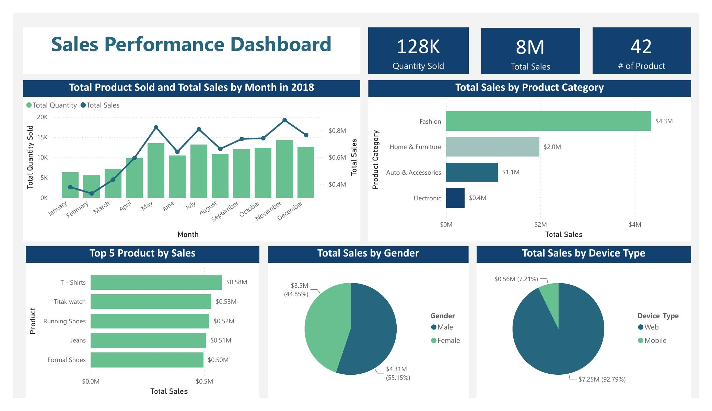

System Administrator Intern
- Mengembangkan workflow automation dengan Google Sheets dan Apps Script untuk mendukung komunikasi layanan 4,000+ pengguna.
- Menerapkan notifikasi otomatis, troubleshooting, dan pemeliharaan sistem.
Data Scientist · AI Engineer
Saya membangun analisis, model machine learning, dan aplikasi AI yang mengubah data kompleks menjadi keputusan yang bisa digunakan.
Profil singkat
Lulusan S1 Informatika Universitas Syiah Kuala dengan IPK 3.96/4.00 yang berfokus pada data analytics, data science, dan machine learning. Saya terbiasa mengolah data secara end-to-end, mulai dari data cleaning, transformasi, analisis, visualisasi, hingga penyusunan insight untuk mendukung pengambilan keputusan. Dengan SQL, Python, Microsoft Excel, dan Power BI, saya membangun dashboard interaktif dan menyajikan hasil analisis secara jelas. Saya bekerja secara analitis dan teliti, serta berupaya menerjemahkan temuan teknis yang kompleks menjadi informasi yang mudah dipahami dan dapat digunakan.
Experience
Pengalaman kerja dan mengajar membentuk cara saya menyampaikan solusi teknis agar mudah dipahami dan dipakai.
Capabilities
Perpaduan analitik, pemodelan, dan deployment memungkinkan saya membawa eksperimen menjadi produk yang dapat diuji.
Selected work · 01–06
Setiap studi kasus menampilkan masalah, pendekatan, teknologi, dan bukti hasil bukan sekadar daftar tools.

Dashboard Power BI untuk membaca performa penjualan dan membentuk lima segmen pelanggan.
Perbandingan LSTM dan GRU untuk tujuh saham energi dan empat horizon prediksi.
IndoBERT untuk membaca sentimen pada delapan aspek layanan dari ulasan Indonesia.
Pipeline regresi production-style dengan registry, API, container, dan drift monitoring.
Agent yang merutekan rekomendasi personal dan pertanyaan kebijakan ke tool yang tepat.
Membaca foto struk, mengekstrak item, lalu membagi tagihan secara proporsional.
Education & credentials
Kredensial yang mendukung kompetensi analitik, delivery proyek, dan komunikasi profesional.
GPA 3.96/4.00 · Best Graduate, Faculty of Mathematics and Natural Sciences.
Kompetensi data collection, validation, business intelligence, dan analytical reporting.
Professional English proficiency credential.
Intensive bootcamp covering end-to-end ML, AI applications, deployment, and monitoring.
Six-course program in planning, execution, Agile/Scrum, and stakeholder management.
Ranked 8th of 696 participants; Top 10 final project among 112 teams.
Let’s work together
Saya terbuka untuk role, kolaborasi, atau diskusi seputar analytics, machine learning, dan AI engineering.